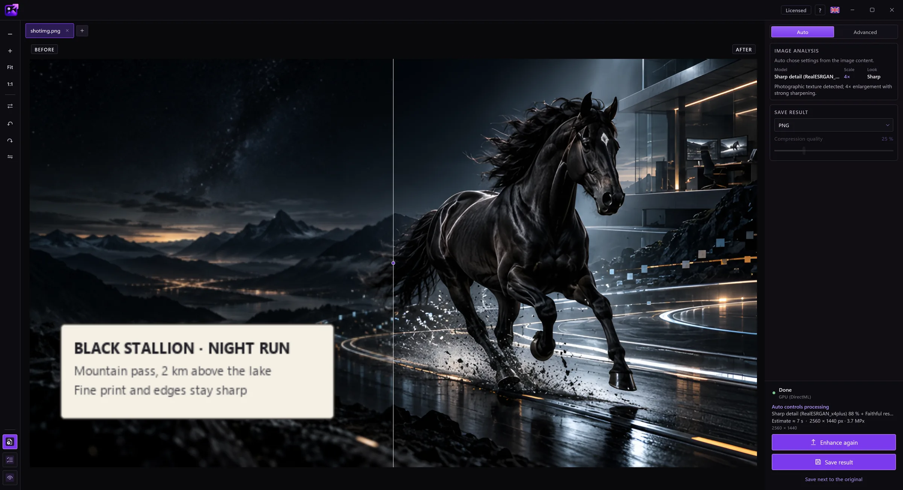
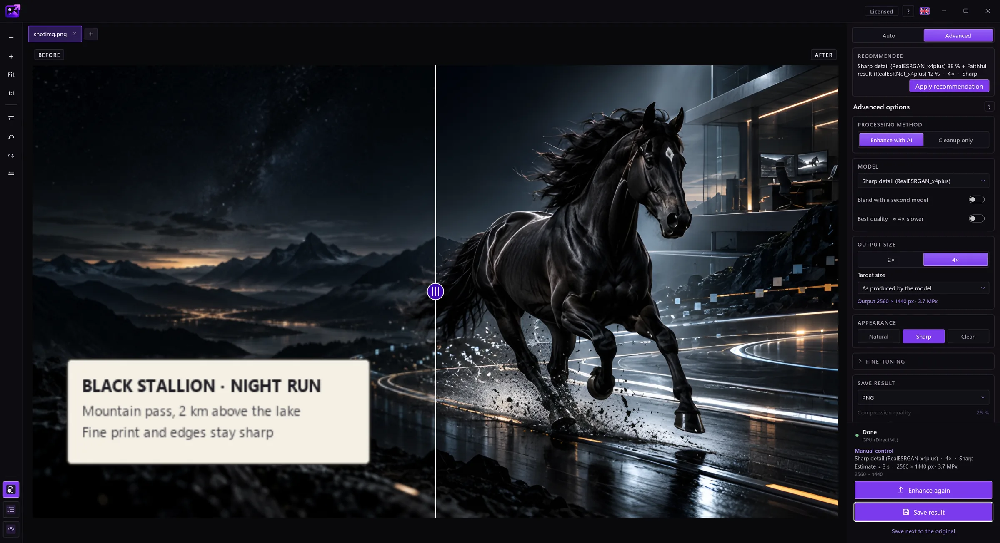
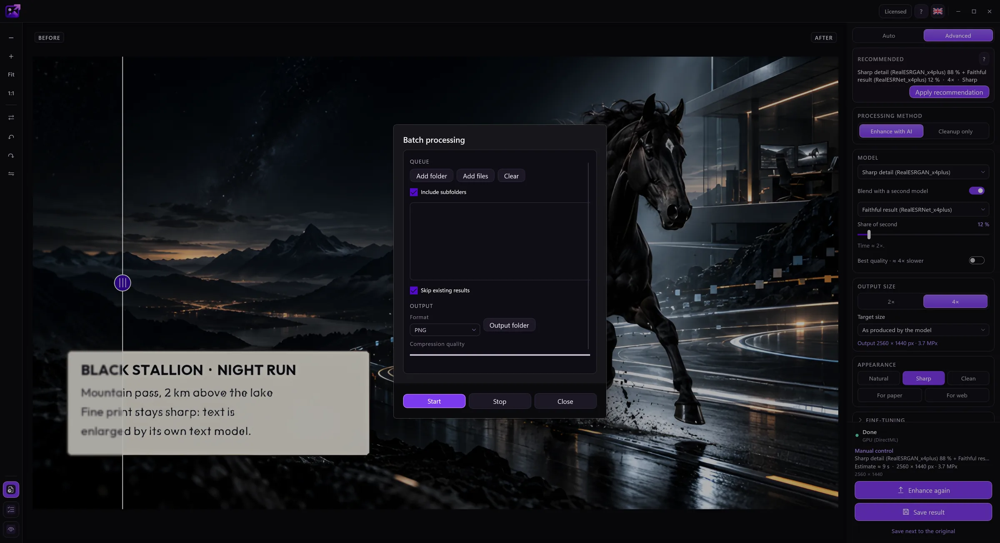
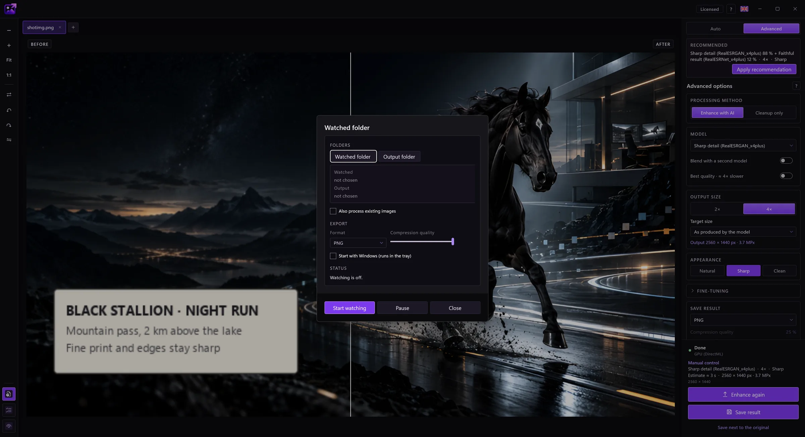

Режим «Авто»
Застосунок розпізнає зображення (фото, малюнок, текст, пошкоджений знімок) і обирає модель та розмір. Зашумлені фото спершу очищаються, а потім повертається дрібне зерно, щоб результат не виглядав намальованим.
EasyUpscale AI збільшує та покращує зображення за допомогою ШІ просто на вашому комп’ютері. Без хмари, без підписки, без черги.
Ви можете безкоштовно завантажити пробну версію та спробувати її. Придбайте ліцензію, якщо вона вам сподобається.


На вихідному знімку (384 × 256 пікселів) цей фрагмент займає лише 75 × 50 пікселів. Ліворуч: його справжні пікселі, посередині: звичайне збільшення, праворуч: EasyUpscale AI (4×).


У режимі «Авто» застосунок розпізнає зображення і сам обирає модель, масштаб і вигляд.
Перетягніть фото чи цілу папку у вікно. Або клацніть по них правою кнопкою в Провіднику та оберіть команду збільшення.
Застосунок визначає, що на зображенні, і обирає відповідну модель. Ви бачите перебіг і можете скасувати будь-коли.
Рухайте повзунок, щоб порівняти оригінал із результатом, і збережіть у PNG, JPEG, WebP, AVIF, TIFF або BMP.

Рухайте лінію для порівняння. Вихідні знімки мають лише 384 × 256 пікселів. Ліворуч: звичайне збільшення, праворуч: справжній результат застосунку (модель «Чіткі деталі»).


Застосунок розпізнає зображення (фото, малюнок, текст, пошкоджений знімок) і обирає модель та розмір. Зашумлені фото спершу очищаються, а потім повертається дрібне зерно, щоб результат не виглядав намальованим.
Обирайте модель вручну, змішуйте дві моделі в потрібній пропорції та задавайте розмір — від 2× і 4× до пресетів на кшталт 4K чи Full HD.
Збільште цілу папку за один раз. Або вкажіть папку, де нові зображення збільшуватимуться самі у фоні.
Стилі та повзунки для різкості, згладжування шуму, близькості до оригіналу та ореолів навколо країв.
Зберігає PNG, JPEG, WebP, AVIF, TIFF і BMP. Прозорість і метадані зберігаються.
Команда в контекстному меню Провідника, запуск разом із Windows і стеження за текою із системного лотка, а також 15 мов.
Інструмент, який добре робить одну справу: на вашому комп'ютері, без облікового запису і за одну ціну.
Одноразова ліцензія. Без підписки, без кредитів за зображення, без черги. Застосунок залишається вашим і через рік.
Усе обчислюється на вашій відеокарті, нічого не завантажується. Знімки клієнтів і компанії — не проблема.
Фотографії, малюнки та старі пошкоджені знімки мають кожен свою модель. Авто обирає потрібну для кожного зображення.
Пакетна обробка, папка під наглядом і команда в Провіднику: зображення збільшуються, поки ви займаєтеся іншим.
NVIDIA, AMD та Intel через DirectX 12. Не потрібна дорога карта чи певний виробник.
Усі функції можна спробувати безкоштовно, лише з водяним знаком. Після покупки маєте 14 днів, щоб повернути гроші без пояснення причин.
Зображення обробляються повністю на вашій відеокарті. Нічого не завантажується, немає кредитів за зображення й немає черги.
Єдине, що надсилає застосунок, — ліцензійний ключ і назва комп’ютера під час перевірки ліцензії. Без ліцензійного ключа він не підключається до інтернету. Подробиці — в політиці конфіденційності.
Справжнє вікно EasyUpscale AI.



Усі функції працюють без ліцензії. Єдина різниця — водяний знак поверх результату: у попередньому перегляді він блідіший, у збережених файлах помітніший.
Ні. Усе обчислюється на вашому комп’ютері. Подробиці — у розділі «Конфіденційність».
Ключ активується один раз через інтернет. Після цього застосунок час від часу непомітно перевіряє ліцензію й працює без з’єднання до 30 днів після останньої перевірки. Одна ліцензія — один комп’ютер. Змінюючи комп’ютер, зніміть активацію в застосунку та використайте ключ на новому.
Ви можете відмовитися від покупки протягом 14 днів і отримати повну вартість назад, без пояснення причин. Після цього ми повертаємо гроші, якщо застосунок не працює на вашому комп’ютері, а ми не можемо це виправити. Застосунок також можна спершу безкоштовно спробувати. Подробиці — в політиці повернення коштів.
Простий настільний інструмент. Ваша відеокарта, ваші файли, ваш результат.